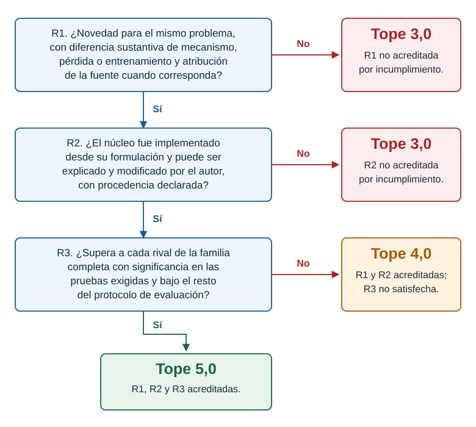

6 Bloque C El modelo original#
La referencia evaluada es CNN causal → LSTM unidireccional → atención temporal por contenido, con salida aditiva positiva, de 1210 parámetros. Sus diez semillas congeladas obtuvieron una RMSE media individual de 0,0029394324 sobre las 608 fechas históricas comunes. La comparación estadística posterior ya está calculada frente a los 16 rivales de E2; sus resultados no acreditan por sí solos R1, R2 o R3.
El cierre de 8.18 añade una auditoría exploratoria común de 19 sistemas en D00–D03, con 796 trabajos completos, análisis y figuras. Sus resultados se distinguen de las diez réplicas históricas y no acreditan por sí solos R1/R2/R3.
Los pilotos v1, v2 y por momentos se conservan como historia de desarrollo. La RMSE 0,0031446147843954175 corresponde a la validación de una semilla aditiva de v2, no a la media de prueba de las diez réplicas. La receta half-t5 con MSE y NLL y el posterior piloto por momentos no superaron sus heurísticas de continuación. La cabeza de momentos no es la arquitectura de la comparación actual ni se ha seleccionado como aporte original. La sección 6.5 conserva la formulación del primer mecanismo y 6.7 la propuesta por momentos; 6.8 identifica la referencia efectivamente evaluada.
Las evidencias completas se encuentran en los anexos: revisión del piloto v1, B, ficha v2, C, ejecución v2, D, cierre v2, E, formulación por momentos, F y dictamen de admisibilidad, G.
6.1 Relación con el paper guía de E2#
La continuidad elegida conserva D7×5 OHLCV, horizonte de un día y objetivo \(\sigma_7\) poblacional sin anualizar. El primer mecanismo v1 añadió penalización de discordancia respecto a un promedio causal y saturación radial de los valores agregados. Ese diseño tiene formulación, código y una propiedad latente demostrada, pero su piloto no mejoró al control M00.
El paper guía sigue siendo TimeMixer. Su limitación de calendario medida en ETTh1 no se traslada automáticamente al adaptador BTC sin esos marcadores. El estrés artificial de E2 motivó investigar sensibilidad, pero puede romper coherencia OHLCV y no prueba que la regla nueva resuelva un defecto económico real. La sección 7 distingue esa hipótesis inicial de los resultados posteriores y del diseño aún pendiente de confirmación.
La propuesta por momentos de la sección 6.7 estudia otra limitación: una escala paramétrica compartida puede tener óptimos distintos para la NLL auxiliar y para la media de la transformación objetivo bajo mala especificación. Los contraejemplos artificiales demuestran esa posibilidad, sin atribuirla como causa ya identificada del resultado de BTC ni como un defecto nuevo de TimeMixer.
6.2 Condiciones de originalidad y admisibilidad#
Condición |
Evidencia actual |
Estado que debe conservarse |
|---|---|---|
R1 Novedad para el fenómeno y la tarea |
Revisiones focales del mecanismo de atención y de la cabeza de momentos; sus componentes conocidos se atribuyen. El dictamen no selecciona todavía la adaptación por momentos como aporte original. |
Pendientes la revisión bibliográfica completa y la diferencia sustantiva. La revisión externa por IA declarada se aporta conforme a la indicación docente documentada en 6.13; no se declara novedad ni ausencia de novedad demostradas. |
R2 Núcleo algorítmico propio y defendible |
El modelo aditivo evaluado se construye con los módulos locales |
La implementación y sus pruebas no acreditan por sí solas comprensión, autoría responsable y defensa del estudiante; esa verificación humana sigue pendiente. |
R3 Superioridad estadísticamente verificada |
Pilotos de desarrollo y comparación posterior completa frente a 16 rivales: los 48 contrastes primarios rechazan tras Holm, con ámbitos temporal y de inicialización distintos. |
No se acredita R3. El corte histórico conserva calendario conocido y tratamientos distintos; el cierre de 8.18 añade comparación común en cuatro conjuntos y la menor RMSE media descriptiva del candidato en los cuatro. Esa auditoría no calcula la nueva batería de tres pruebas con Holm ni certifica potencia prospectiva o independencia entre mercados. |
CNN, LSTM, atención por contenido, consultas aprendidas y saturación no se reclaman como invenciones. Tampoco se reclaman nuevas las desigualdades de momentos, los scores de media o las guardas de salida. La contribución candidata debe diferir sustantivamente en mecanismo, pérdida o entrenamiento; cambiar datos o hiperparámetros no basta. Las variantes funcionales y los resultados de desarrollo se conservan sin convertirlos en innovaciones acreditadas.
6.3 Revisión de literatura y evidencia de novedad#
Antecedentes del primer mecanismo de atención. En el corte inicial se examinaron focalmente los originales de Kim, Papamakarios y Mnih (2021) y Dasoulas, Scaman y Virmaux (2021). Ambos son antecedentes directos de atención y propiedades Lipschitz. Una consulta aprendida y una cota, por separado, ya tienen antecedentes. La matriz siguiente conserva el alcance histórico de ese primer corte; la ampliación del 18 de noviembre, con ocho lecturas focales de texto completo, se documenta en 6.10.
En ese corte, las seis cadenas bilingües generaron 18 solicitudes a OpenAlex, Crossref y arXiv. Las 18 fueron denegadas por la política de red antes de ejecutar las búsquedas. El número de resultados es desconocido, no cero. Las ocho consultas GitHub y el examen de tres exportaciones heredadas no sustituyeron la búsqueda exigida en tres bases. Tampoco se presenta un subagente de IA como la persona externa requerida.
Trabajo cercano |
Relación que debe distinguirse |
|---|---|
Kim et al., The Lipschitz Constant of Self-Attention |
Atención L2 entre pares y estabilidad: no toda atención se vuelve una contribución nueva por tener cota. |
Dasoulas et al., Lipschitz Normalization |
Consulta aprendida y normalización de scores; el candidato acota valores y añade discordancia, pero su novedad exacta está por verificar. |
TimeMixer |
El procesamiento multiescala ya tiene antecedentes. La diferencia debe ser de mecanismo. |
Luong et al., atención en traducción |
La atención por contenido es un componente convencional. |
Peng et al., CNN-LSTM con atención para tendencia cripto |
La familia híbrida y su uso en criptomonedas no se pueden presentar como inéditos. Su objetivo no se equipara a σ₇ sin revisar el original. |
CEEMDAN-RF-LSTM para volatilidad realizada |
Separar mecanismo y definición del objetivo; no comparar métricas de tareas distintas como si fueran homogéneas. |
HARNet |
La causalidad y los inductive biases para volatilidad ya tienen precedentes. |
La saturación \(T_B\) es también el gradiente de \(\phi_B(h)=B^2(\sqrt{1+\|h\|^2/B^2}-1)\), de forma pseudo-Huber radial. Esta identidad impide presentarla aislada como una función inventada aquí. No se atribuye una fuente histórica primaria no verificada. El registro completo distingue lecturas nuevas, heredadas y sólo metadatos. No se emite aún una declaración de novedad.
Revisión posterior de la cabeza de momentos. Los anexos F y G integran los antecedentes y el dictamen específicos de esa adaptación:
Fuente y localizador comprobado |
Consecuencia para la propuesta |
|---|---|
Merhav (2023), §2, ec. (8), ejemplo 2 ec. (15). |
La cota inferior se especializa de Jensen reponderado; no es una desigualdad inventada aquí. |
Gneiting (2011; preprint v2), §3.1, teorema 3.1 y ec. (20). |
Los scores de media de forma QLIKE/Bregman tienen antecedentes. |
ConstraintNet, Brosowsky et al. (2021), pp. 6813–6817, ec. (7) en p. 6815. |
Una guarda admite restricciones por muestra, incluso de otra red; aprender las fronteras no basta como diferencia sustantiva. La guarda sobre umbral está en p. 6816 y la aplicación a intervalos en p. 6817. |
Faithful, Stirn et al. (2023), §2 Methods, páginas físicas 2–4; ec. (5) y teorema 1 en p. 4. |
Su garantía de actualizaciones no se hereda por consistencia del riesgo. El control de media sola conserva todos los ancestros de la media, incluidas las lecturas de momentos de nuestra cabeza. |
Las revisiones posteriores registran doce consultas web iniciales y ocho adicionales; no equivalen a búsquedas nativas completas. Los tres intentos API de esa etapa no recibieron respuesta bibliográfica y sus conteos son desconocidos. Al cierre de esa etapa seguían pendientes la cobertura exigida en §6.3 de la guía, seguimiento por citas, repetición antes de entrega y verificación externa. Los avances posteriores y la modalidad de IA declarada se documentan en 6.12–6.13. El paquete de revisión del anexo G está preparado, sin diligenciar ni firmar. No identificar la composición exacta en una revisión focal no prueba su ausencia.
El cierre de la revisión exige al menos cinco cadenas en inglés y español en tres bases, combinando mecanismo, tarea y sinónimos e incluyendo su posible origen en otras aplicaciones. La ampliación de 6.10 sólo obtuvo resultados nativos observables en arXiv; ese corte histórico no completó las tres bases. La ejecución Colab posterior de 6.12 sí añade respuestas verificadas de Crossref, arXiv y OpenAlex, con límites de sintaxis y cribado explícitos. Cada consulta debe registrar fecha, cadena, resultados, títulos/resúmenes examinados, textos completos revisados y trabajos relevantes; un acceso bloqueado se registra con conteo desconocido. Debe completarse el seguimiento de citas hacia atrás y adelante desde tres a cinco trabajos cercanos —incluidos TimeMixer y la fuente del mecanismo, cuando corresponda— y la búsqueda de implementaciones y tablas de resultados. La matriz debe clasificar cada diferencia como mecanismo, pérdida/entrenamiento o sólo aplicación, y repetirse antes de la entrega. La guía original prevé que una persona ajena al diseño repita al menos dos cadenas y anexe su concepto. Para este proyecto se aplica la indicación docente comunicada por el autor: ese revisor puede sustituirse por IA si se declara su uso. El dictamen y las dos repeticiones por IA se documentan en 6.13; no se presentan como una revisión humana.
6.4 Ciclo de desarrollo#
Etapa |
Evidencia disponible |
Condición siguiente |
|---|---|---|
Revisión y hueco |
Primer mecanismo de atención y propuesta posterior por momentos, con antecedentes y límites documentados. |
Completar revisión y verificación externa antes de una declaración de novedad. |
Formulación |
Cota latente del primer módulo y teoría condicional de momentos con sus supuestos; contraejemplos a garantías no demostradas. |
Justificar una contribución sustantiva y su alcance sin convertir la prueba en promesa de desempeño. |
Implementación y desarrollo |
Cinco recetas entrenadas entre v1/v2 y tres recetas completadas en el piloto por momentos; diez réplicas posteriores de la receta aditiva congelada. |
Repetir semillas de una receta no equivale a proponer diseños nuevos ni completa la defensa académica. |
Pruebas y auditoría |
Pruebas de software y auditorías reproducibles, incluidas las comprobaciones artificiales del nuevo modelo, reanudación y guardado. Las 35 pruebas del primer módulo conservan su alcance histórico. |
El software y los cálculos artificiales no sustituyen evaluación confirmatoria o autoría defendida; la revisión externa por IA de 6.13 es un producto distinto. |
Selección de desarrollo |
La cabeza aditiva v2 obtiene la menor RMSE global del piloto; half-t5 con auxiliares y el piloto por momentos no superan sus heurísticas. La aditiva se replica sin nueva selección. |
Conservarla como referencia, sin promoverla a aporte original o ganador único. |
Diseño y confirmación |
Resultados históricos, diez réplicas aditivas y análisis posterior completo de la familia conservados; no hay preregistro confirmatorio de estos resultados. |
La comparación común exploratoria y los tres conjuntos adicionales ya tienen resultados en el cierre de 8.18; siguen pendientes potencia prospectiva, batería formal y diseño confirmatorio apropiado. |
La sección 7 integra método, pilotos, propiedades y controles. Las cinco recetas de v1/v2 y las tres del piloto por momentos forman un subtotal histórico de ocho; las diez semillas aditivas repiten una receta. El \(N_d\) global sigue pendiente de conciliación de propuestas, parametrizaciones, variantes y ensayos y no se reduce a ese subtotal. Los conjuntos adicionales todavía no se han elegido y el análisis posterior no se presenta como preregistro confirmatorio.
6.5 Primer mecanismo implementado: formulación y reproducción#
Esta sección conserva la formulación histórica de penalización y saturación del primer módulo. Sus constantes, conteo de parámetros, pruebas y descargas pertenecen a ese código; la implementación posterior de momentos se distingue en 6.7 y la receta de referencia v2 en el apartado 7.5.
El encoder usa convolución con relleno sólo histórico, activación tanh y LSTM unidireccional. Recibe ventanas ya estandarizadas y produce estados \(H=(h_1,\ldots,h_7)\). Una matriz fija \(P\), independiente de \(H\), calcula promedios causales. La cabeza implementa
Los parámetros efectivos satisfacen cotas mediante normalizaciones suaves; no se presume que cualquier peso libre esté acotado sin esa parametrización. La salida es positiva en unidades \(\sigma_7/a_{\rm tr}\) y el pipeline invierte la escala del objetivo fuera del módulo. Los detalles, derivadas y algoritmo completos están en la demostración descargable y en la sección 7.3.
La configuración inicial tiene 1.211 parámetros, ocho canales CNN y doce estados LSTM. B=1, Q=1, W=4, Λ=1 y τmín=0,25 fueron decisiones iniciales de software, no ganadores de HPO. Las tres variantes funcionales eliminan penalización, saturación o contenido. La base M00 sin ambas modificaciones ya fue implementada y entrenada en v1; su contraste con el modelo completo se conserva en el anexo B. Esto no completa automáticamente el factorial estadístico de las ablaciones.
Pruebas y límites de exportación#
El primer módulo aprobó 35 casos pytest: formas y entradas inválidas, semilla reproducible sin alterar el RNG global, causalidad del encoder, independencia entre muestras, gradientes activos, gradcheck, restricciones suaves, ablaciones aisladas y serialización. Este conteo identifica ese módulo histórico; las ampliaciones de software conservan sus propios ámbitos de comprobación. El sobreajuste diminuto usa ocho ejemplos artificiales y 350 pasos de Adam; no es entrenamiento en Bitcoin.
La ida y vuelta TorchScript se probó con lotes 1, 3 y 4 y tolerancia declarada. El trazado LSTM produce advertencias de comprobaciones de forma tratadas como constantes: hay que aplicar validate_input antes de usar una traza. No se entrega ese ensayo como artefacto final entrenado en mercado.
La cabeza usa una multiplicación densa por \(P\): su término dominante es \(O(n^2d)\), además del encoder. No se declara coste lineal de una implementación de promedio móvil que todavía no se usa. La complejidad asintótica no sustituye FLOPs, memoria y latencias medidos.
Uso y reproducción#
from src.original_model import CandidateConfig, OriginalModel
model = OriginalModel(CandidateConfig(), seed=0)
# x contiene ventanas ya transformadas y estandarizadas de forma lote×7×5.
scaled_prediction = model(x)
python -m pip install -r requirements-e3-original-cpu.lock.txt
python -m pytest tests/test_original_model.py -q
python scripts/e3_verify_original.py --check
El workflow CPU conserva esas comprobaciones. Los ejecutores de desarrollo v1/v2 existen y sus resultados están auditados; eso no acredita una integración confirmatoria completa con todos los rivales de E2. El autor deberá comprender y modificar el código y la demostración; la asistencia de IA está declarada en las fuentes y la procedencia.
6.6 Validez del modelo y regla de evaluación#
La guía distingue: si R1 o R2 fallan, tope 3,0; si R1/R2 y la propiedad se acreditan pero no R3, tope 4,0; la ruta al 5,0 exige cumplir la familia completa y los demás requisitos de evaluación. Es una regla condicionada a evidencia y evaluación académica, no una calificación calculada para este avance.

Figura 1 Árbol de decisión adaptado de la Figura 3 de la guía. Las ramas «No» describen incumplimientos establecidos; un estado pendiente de revisión no se convierte automáticamente en incumplimiento. La propiedad formal y los demás requisitos siguen siendo exigibles. El árbol no asigna una nota al proyecto.#
Aquí las condiciones siguen abiertas. Una demostración de la cabeza y pruebas de software no convierten R1 o R3 en aprobadas ni certifican la defensa académica del autor. Las limitaciones y resultados adversos deberán conservarse.
6.7 Propuesta posterior: cabeza de momentos y dictamen vigente#
La propuesta conserva el mismo codificador y atención por contenido. Con los seis retornos conocidos al origen, define
A se calcula con historia observable; U,V,V² son etiquetas de entrenamiento, nunca entradas disponibles al pronosticar. Tres lecturas escalares del contexto producirían
Aquí m,q representan momentos de V; este q no es la consulta de atención de la sección 6.5. Con momentos verdaderos y positivos, la región realizable de la media es [L,H) cuando q>m²; L se alcanza y H es supremo no alcanzado. Si q=m², ambas cotas coinciden. Con momentos estimados, la región calculada puede no contener la media verdadera: no es un intervalo de predicción ni garantiza menor MSE.
El criterio propuesto suma MSE de \(Y\) y scores conocidos de media para V,V², con escalas calculadas sólo en ajuste. La demostración de consistencia condicional exige E[V|X]>0, E[V²|X]<∞ y una clase que represente conjuntamente los valores verdaderos; no demuestra convergencia de esta red finita, fidelidad de trayectoria o superioridad predictiva. El caso verdadero de momentos nulos queda fuera del teorema logarítmico. La formulación, bordes y verificación artificial completos están en el anexo F.
El anexo G demuestra dos límites: momentos estimados incorrectos pueden excluir la media verdadera, y los auxiliares pueden empeorar un paso escalar SGD frente a la misma cabeza con MSE sola. Son cálculos artificiales, no una simulación del Adam futuro ni evidencia de fracaso en BTC. El control que faltaba en el primer diseño —la misma cabeza por momentos sin pérdidas auxiliares— se incluyó en el piloto completado; una media directa con igual número de parámetros responde otra pregunta.
Cierre posterior al dictamen: se conserva la adaptación experimental sin seleccionarla como aporte original. El piloto solicitado para comprobar su funcionamiento ya completó las tres recetas; su resumen inmutable registra RMSE 0,0032589201 para moment_joint, frente a 0,0031446148 de la referencia aditiva congelada, sobre la validación de desarrollo. No superó la heurística del 2 %. Ese piloto no cerró la revisión sustantiva del mecanismo por momentos; su resultado no demuestra ausencia de novedad ni explica por sí solo el mecanismo.
La implementación en src/e3_moment_model.py tiene 1236 parámetros, contados sobre el módulo: 1197 del codificador y atención, más tres lecturas activas de 13 parámetros. Se compararon moment_joint, moment_mean_only y direct_moment_aux; la referencia aditiva v2 se reutilizó mediante su CSV congelado, con 1210 parámetros. El apartado 7.8 actualiza el cierre; el anexo F.6 conserva las instrucciones históricas. Estas tres recetas no forman parte de las diez réplicas aditivas de la comparación actual.
6.8 Referencia evaluada y alcance de la evidencia posterior#
La denominación de los archivos, CNN-LSTM-atencion-aditiva E3, identifica la salida aditiva positiva de 1210 parámetros, con atención temporal por contenido. No identifica la penalización y saturación de 6.5 ni la cabeza de momentos de 1236 parámetros. Se mantienen las diez semillas 271801–271810; la semilla histórica de desarrollo 20261116 queda fuera de esa media y no se elige una réplica por su error de prueba.
Formulación de la referencia efectivamente evaluada#
Para una ventana estandarizada \(X\in\mathbb R^{7\times5}\), el encoder aplica una convolución causal de kernel 3 y ocho canales, tanh y una LSTM unidireccional de doce estados. Si \(H=(h_1,\ldots,h_7)\) es su salida, la atención usa
No se penalizan los scores ni se saturan los valores. La consulta no es otro modelo entrenado por separado: es un vector de parámetros de esta misma red. La lectura es
\(A\) es el piso observable definido en la ecuación (5) de 6.7, calculado a partir de los seis retornos de la ventana; \(a_{\rm tr}>0\) es la media del objetivo en los 532 ejemplos de ajuste. El encoder y la atención usan float32; la lectura y la salida usan float64. La pérdida de esta receta es únicamente \(\operatorname{mean}[(\widehat y-y)^2/a_{\rm tr}^2]\): no usa NLL, cuadratura para predecir, una escala Student ni intervalos calibrados. La palabra «aditiva» se refiere a sumar un exceso positivo al piso, no a una segunda clase de atención.
La propiedad de soporte se verifica directamente: para \(A\ge0\), \(a_{\rm tr}>0\) y \(z\) real finito, softplus(z)>0, por lo que \(\widehat y>\sqrt A+10^{-4}a_{\rm tr}\) en aritmética exacta. Además, con \(A\) fijo, \(\partial\widehat y/\partial z=a_{\rm tr}\operatorname{sigmoid}(z)\in(0,a_{\rm tr})\). Es una propiedad conocida de esta parametrización escalar; no es una cota global del mapa OHLCV, una prueba de novedad ni una garantía de menor error. Los casos sintéticos de salida comprueban la fórmula y el respeto del piso con tolerancia numérica. La cota latente del módulo de 1211 parámetros no se hereda al retirar la saturación.
El apartado 7.3 aporta una derivación independiente para la cabeza aditiva, expresada en la cota (25): con el piso y los parámetros fijos y las filas latentes acotadas por \(\sqrt{12}\), obtiene \(K_{\rm ad}=77{,}32121111929344\,a_{\rm tr}\). Su verificación usa estados sintéticos y no pesos entrenados. Es una cota condicional conocida de atención sobre estados acotados; tampoco acredita originalidad o explica por sí sola la mejora histórica.
El conteo auditable es CNN 128 + LSTM 1056 + consulta, lectura, sesgo y temperatura 26 = 1210. Para longitud \(n\), \(f\) variables, \(c\) canales, kernel \(k\) y estado \(h\), el coste por muestra incluye \(O(nkfc+n(ch+h^2)+n^2h)\). El último término sigue presente en el código eager heredado porque calcula la referencia densa \(PH\) aunque su penalización esté desactivada; no se declara un coste lineal de una implementación optimizada inexistente. Faltan los FLOPs completos y la curva empírica de escalabilidad de esta receta.
Pseudocódigo descriptivo de la ejecución cerrada#
Entradas: datos y código fijados por hash; escalador de 532 fechas;
semillas 271801–271810; plan y presupuesto ya registrados.
Para cada semilla:
Construir la red de 1210 parámetros y ajustar el sesgo inicial
por 64 pasos de bisección usando sólo el exceso medio de ajuste.
Optimizar MSE con AdamW(lr=0.001, weight_decay=0), lotes de 32
y recorte de norma del gradiente a 1; conservar optimizador y RNG.
Tras cada época, medir RMSE en las 116 fechas de validación.
Conservar la menor RMSE; los empates conservan la época anterior.
Parar a las 40 épocas o tras 8 épocas sin mejora, sujeto al presupuesto.
Confirmar guardado remoto de los diez entrenamientos terminados.
Cargar los mejores pesos de cada semilla y predecir las 608 fechas fijadas.
Salida: diez trayectorias y sus métricas individuales; conservar todas.
Este pseudocódigo explica la campaña histórica; no inicia ni amplía entrenamiento. El plan inmutable de estabilidad y su código fijan los detalles de reanudación y cómputo del consumo.
E3 conserva 532 ejemplos de ajuste y 116 de validación, sin usar las 53 fechas de calibración de E2. Los 13 rivales neuronales de E2 tienen diez semillas cada uno; Persistence, SeasonalNaive y ARIMA conservan una trayectoria determinista por sistema: 133 predictores de E2, además de las diez réplicas de E3. Todos se puntúan sobre las mismas 608 fechas, del 1 de enero de 2025 al 31 de agosto de 2026. E2 se ajustó con 655 ejemplos y calibró con 53; no se afirma igualdad de tratamiento o presupuesto.
Las métricas descargables y los 48 contrastes primarios respaldan el resultado posterior: los tres procedimientos rechazan para cada uno de los 16 rivales tras Holm en la familia de 48. Dos procedimientos estudian incertidumbre temporal condicionada a trayectorias ajustadas y otro la inicialización condicionada al calendario; no se presentan como tres confirmaciones temporales equivalentes. El MCS auxiliar conserva diez sistemas, incluida la aditiva, y no identifica un ganador único. La sección 8 expone supuestos, sensibilidades y límites; R1, R2 y R3 siguen sin acreditarse.
6.9 Revisión del cumplimiento para esta referencia#
La revisión histórica del 17 de noviembre de 2026, a las 20:47 UTC, distingue los requisitos de la guía de la evidencia que correspondía entonces a la receta aditiva. Se volvieron a ejecutar en CPU las pruebas sintéticas existentes del modelo y del entrenamiento, sin cargar cohortes de mercado ni repetir ajustes del benchmark. El informe de comprobación conserva resultados, entorno y hashes de las fuentes. Los casos del modelo cubren también las otras dos cabezas de v2; su total no se atribuye exclusivamente a la aditiva.
Ese recibo precede a la exportación ONNX verificada el 18 de noviembre a las 00:08 UTC: la referencia aditiva de la semilla 271801 ya tiene paridad frente a memoria CPU y pronósticos congelados sobre las 608 fechas comunes, con tolerancia absoluta de 10⁻⁶ en σ₇. Las secciones 5.2 y 9 presentan ese artefacto y los otros tres ONNX del prototipo. El pendiente de exportación del informe histórico conserva su fecha y no describe esta etapa posterior; el funcionamiento público, la política común de ajuste y los demás requisitos siguen teniendo sus propios pendientes.
Requisito de la guía |
Evidencia aplicable a la receta de 1210 parámetros |
Cierre pendiente |
|---|---|---|
Módulo, formulación y pseudocódigo |
Código local, forward y pérdida identificados en 6.8; conteo 1210 verificado. |
Diferencia algorítmica sustantiva y defensa humana de la contribución candidata. |
Propiedad con supuestos y verificación |
Piso y exceso positivo, más cota condicional de la cabeza aditiva en 7.3 con 1728 pares sintéticos y 96 gradientes de referencia. La cota de saturación pertenece a v1. |
El dominio latente y el piso fijo no cubren el pipeline OHLCV. Faltan evidencia de utilidad predictiva y una contribución admisible; no se declara nueva esta propiedad. |
Pruebas del modelo |
Inicialización reproducible, admisión de datos, salida, precisión mixta y gradientes finitos no nulos; reanudación sintética de v2 con pesos, optimizador y RNG. La etapa posterior añade el ONNX aditivo de la semilla 271801 y su ida y vuelta en 608 fechas. |
Sobreajuste diminuto específico de esta receta y |
Protocolo común y HPO equivalente |
Se conserva la receta elegida por validación y sus diez semillas; los resultados históricos no se alteran. |
E2 y E3 no comparten política final de ajuste, tamaño de entrenamiento o presupuesto demostrados como equivalentes. |
Ablación de al menos tres componentes |
Hay controles de desarrollo y pruebas funcionales de otras variantes. |
Ablación estadística de la receta defendida, aislando componentes, con particiones, semillas y tratamiento comparables; los controles de v1 no la completan. |
Interpretabilidad, fidelidad y estabilidad |
Se puede inspeccionar la atención; los errores por régimen están documentados. |
Comparación con el mejor benchmark, fidelidad por borrado/inserción y estabilidad entre semillas. Los pesos de atención no bastan como explicación validada. |
Complejidad y eficiencia |
Conteo y coste asintótico identificados; resultados y código conservados. |
FLOPs completos, escalabilidad y recursos medidos en condiciones comunes; ver capítulo 5. |
Literatura y R1 |
Lecturas focales, consultas históricas y respuestas posteriores verificadas de tres bases en 6.12. |
Afinar consultas y completar cribado, lecturas, seguimiento de citas y diferencia sustantiva. El dictamen externo y dos repeticiones de cadenas por IA declarada se aportan en 6.13. |
R3 y evaluación amplia |
Diez semillas y análisis posterior frente a 16 rivales, con límites explícitos. |
Potencia por contraste y conjunta, protocolo confirmatorio justo y al menos tres conjuntos adicionales elegidos antes de sus resultados; ver capítulos 7 y 8. |
La matriz de revisión de requisitos conserva el mismo corte histórico de revisión; el avance posterior de exportación se documenta arriba y en las secciones 5.2 y 9. No sustituye la model card, la declaración de datos, la bitácora de diseños ni la declaración de asistencia de IA de los capítulos correspondientes. La siguiente decisión de investigación debe resolver qué mecanismo se defenderá como contribución; una mejor RMSE de esta referencia convencional no resuelve esa decisión por sí sola.
6.10 Revisión focal ampliada del 18 de noviembre#
La revisión final de este corte reúne 75 registros de consulta o acceso, once trabajos comparados y ocho lecturas focales de texto completo. Los registros no son 75 artículos ni una medida de cumplimiento. La bitácora JSON y su versión CSV distinguen búsquedas nativas, descubrimiento web y accesos bloqueados; la matriz de trabajos cercanos conserva tarea, localizador, diferencia y alcance de cada lectura.
Se ejecutaron seis cadenas en inglés y español y cuatro búsquedas por título en la interfaz nativa de arXiv. Las 36 solicitudes API —seis cadenas en OpenAlex, Crossref, Semantic Scholar, arXiv, DBLP y OpenReview— no recibieron resultados bibliográficos por bloqueo de transporte. Los once sondeos alternativos mediante la herramienta web sobre DBLP/OpenReview/IEEE tampoco recuperaron resultados. Sus conteos permanecen desconocidos; las quince consultas de buscador general no se contabilizan como otras bases. Sólo arXiv aportó resultados nativos observados: no se completó la cobertura efectiva de tres bases.
Antecedente primario y pasaje leído |
Consecuencia para la referencia aditiva |
|---|---|
Dasoulas et al. (2021), §3.3 ec.(2), §5 ec.(17)–(18); Luong et al. (2015), §3.1 ec.(7)–(8). |
Pooling softmax, consulta aprendida y atención sobre estados recurrentes tienen antecedentes. E3 no implementa LipschitzNorm; cambiar la aplicación no acredita un mecanismo nuevo. |
Kim et al. (2021), §6 p.8. |
La atención diferenciable restringida a un dominio compacto ya se considera Lipschitz. La constante y verificación particulares de 7.3 son sustento técnico, sin acreditar novedad por sí solas. |
ConstraintNet, versión AAAI2021, p.6816. |
La guarda sobre un umbral por muestra mediante |
De los siete antecedentes iniciales, cinco cuentan con lectura focal del cuerpo; Peng y CEEMDAN conservan sólo extractos editoriales indexados por bloqueo del texto completo. Entre los trabajos añadidos, la tesis UCLA de Xiaomeng Li (2025), §2.3/§3.2.4, aplica CNN-LSTM a una suma de siete retornos cuadrados: no es la σ₇ poblacional centrada. El preprint de Alex Y. Li (2024), §3.1/§3.5, aplica TimeMixer a volatilidad cripto móvil de 21 días anualizada. Esas diferencias impiden tratar sus métricas o tareas como idénticas.
El dictamen delimitado clasifica los antecedentes como mecanismo conocido, análisis, entrenamiento o aplicación y reduce la posible contribución a la adaptación concreta del soporte de σ₇ y su integración. No localizar la composición exacta en esta revisión parcial no demuestra su ausencia. R1 sigue pendiente de acreditación: siguen sin cerrarse la diferencia sustantiva defendible, el seguimiento bibliográfico completo y la repetición final. Ese corte no disponía del dictamen externo que se adopta por la modalidad de IA declarada en 6.13. La adopción no acredita R2/R3. El control posterior de soporte y proyección aporta evidencia adicional de utilidad y límites, sin convertirla en originalidad o atribución causal.
6.11 Expediente de revisión y verificación externa de R1#
El primer expediente de revisión del 18 de noviembre fija el objeto en InnovationModel("additive_positive_head"), de 1210 parámetros, con identidad de código y procedencia verificables. Reúne la comparación formal del mecanismo, seguimiento focal de citas e implementaciones, consultas reproducibles y un paquete humano sin diligenciar. El expediente completo, su estado estructurado y el manifiesto SHA-256 conservan aquel corte; 6.12 documenta los resultados posteriores de Colab sin reescribir esos archivos. La integridad de archivos no acredita novedad.
La comparación delimita un antecedente especialmente cercano: ConstraintNet ya describe una guarda por muestra sobre un umbral. Para un piso y una escala positivos fijos, el exceso de E3 puede expresarse mediante una transformación escalar del enlace exponencial. Esto identifica el mismo tipo de región admisible por muestra; no demuestra igualdad de clases neuronales con lecturas afines, gradientes, optimización o aritmética finita. La sustitución de exp por softplus y el umbral específico de σ₇ siguen necesitando una justificación de adaptación sustantiva. El análisis separa semejanza matemática de influencia histórica o copia.
Condición |
Evidencia del expediente |
Estado en el corte histórico de 6.11 |
|---|---|---|
Objeto preciso y diferencia frente a los antecedentes. |
Identidad del modelo, descomposición del objetivo, comparación de fórmulas y límites de la posible contribución. |
Comparación disponible; diferencia sustantiva sin acreditar. |
Tres bases bibliográficas efectivas y cribado verificable. |
Se conservan los resultados históricos de arXiv y los nuevos fallos de acceso con conteos desconocidos. El recolector registra respuestas originales, metadatos e integridad para su ejecución fuera de este entorno. |
Cobertura y cribado pendientes; un recolector preparado no añade bases consultadas. |
Seguimiento de fuentes próximas, citas e implementaciones. |
Seguimiento focal con localizadores, relaciones y versiones de código observadas; los límites de lectura se conservan. |
Evidencia parcial que debe completarse y repetirse antes de entregar. |
Concepto de una persona ajena al diseño. |
Instrucciones, dos cadenas recomendadas, formulario vacío y registro |
Revisión humana no realizada; no hay identidad, firma o concepto que atribuir. |
El cuaderno de revisión bibliográfica para Colab usa CPU y conserva los resultados en una rama nueva de GitHub. Una ejecución satisfactoria recupera evidencia bibliográfica; no aprueba automáticamente el cribado, la revisión humana o R1. No entrena modelos, ejecuta predicciones de mercado ni modifica los resultados históricos.
El paquete inicial conserva las instrucciones y el formulario de revisión sin diligenciar. La modalidad vigente para este requisito es la revisión por IA declarada de 6.13, con dictamen y dos cadenas repetidas documentados. La aceptación de R1 corresponde a la evaluación académica. R1 permanece pendiente de acreditación: el expediente puede sustentar un concepto favorable, desfavorable o no concluyente; no se transforma la preparación asistida por IA en una revisión humana ni en una declaración de originalidad.
6.12 Resultados Colab de tres bases y revisión técnica adicional#
El paquete de revisión de esta ejecución reúne recibos, auditoría, cribado, fuentes y dictamen de IA. Su manifiesto de integridad distingue la conservación de archivos de la valoración científica y humana.
La ejecución 20261118T202323797581Z consultó el código 314f6e7e888b0748c8790cf3c0d9f4fc71bd6a0b y guardó sus resultados en el commit inmutable edf6fe3. La auditoría verificó 27 archivos y 1.626.702 bytes, incluidos manifiesto, respuestas y CSV inicial. Sus tamaños, SHA-256 y blobs Git coinciden; los 10.966 blobs anteriores permanecen idénticos. La auditoría de bytes y metadatos y la copia empaquetada de los recibos conservan esas evidencias. El ZIP es un empaquetado posterior de los archivos originales, sin modificarlos.
Base |
Resultado de las seis cadenas |
Alcance |
|---|---|---|
Crossref |
Seis respuestas bibliográficas válidas. |
Primera página, diez registros por consulta; incluye componentes de figuras y búsquedas por relevancia amplias. |
arXiv |
Seis respuestas Atom válidas. |
El feed expande palabras no entrecomilladas con OR; los resultados incluyen áreas ajenas al mecanismo. |
OpenAlex |
Seis respuestas bibliográficas válidas. |
Primera página, diez registros por consulta; recuperar metadatos no equivale a leer sus fuentes. |
DBLP |
Seis respuestas HTTP 202 con cuerpo HTML no analizable como bibliografía. |
Fallos conservados; conteos desconocidos y sin crédito de base efectiva. |
Semantic Scholar |
Seis respuestas HTTP 429. |
Límite de servicio; conteos desconocidos y sin crédito de base efectiva. |
Las 18 respuestas válidas de tres bases contienen 180 ocurrencias de metadatos. Esto acredita la cobertura de respuestas de esta ejecución, no una búsqueda exhaustiva o ausencia de antecedentes. Los conteos no son comparables entre bases ni equivalen a artículos pertinentes. El CSV original mantiene not_screened; el cribado posterior de los títulos documenta decisiones nuevas, duplicados y candidatos para lectura sin alterar ese recibo. El cribado de la primera página no completa la lectura de resúmenes, textos o todas las páginas.
Se solicitó además una revisión técnica por IA con contexto inicial separado y sin acceso a los dictámenes previos. El informe de esa revisión identifica fuentes realmente consultadas, formulación, coincidencias, diferencias y limitaciones. Esa separación de contexto no prueba independencia humana; no hubo una persona revisora. El dictamen se adopta para el requisito por la modalidad de IA declarada autorizada en 6.13. El estado de la ampliación conserva el corte anterior a esa indicación docente.
La lectura adicional identifica un antecedente financiero concreto: Opschoor y van der Wel, publicado en línea en 2024 y en JBES 43(2), 298–311 en 2025, §2.2, ecuación (6), utiliza límite inferior más softplus. Su problema es la curva de rendimientos, con una cota prefijada y factores Nelson–Siegel; no implementa la ventana, el piso observable de σ₇ o la CNN–LSTM de E3. Este antecedente limita una pretensión amplia sobre la transformación de salida, sin probar identidad de todo el modelo ni ausencia de originalidad de la adaptación específica. Las fuentes y localizadores distinguen cinco lecturas focales de secciones del cuerpo y una fuente consultada sólo por resumen.
La ampliación del expediente no ejecuta entrenamientos, pronósticos de mercado o contrastes nuevos. R1 no queda acreditada por consultar tres bases ni por disponer de otro dictamen de IA. Deben justificarse la diferencia sustantiva, las lecturas pertinentes y el refinamiento y repetición final de búsquedas. La revisión externa por IA declarada se documenta en 6.13; el formulario humano continúa sin diligenciar como hecho histórico, sin ser el bloqueo de modalidad de ese requisito. La aceptación científica corresponde al evaluador.
6.13 Revisión externa por IA declarada: indicación docente aplicada#
El autor comunicó el 18 de noviembre de 2026 que el profesor permite sustituir al revisor humano por IA, con la condición de mencionar su uso. Se aplica esa indicación a la revisión externa de R1 que se estaba discutiendo. Su registro de procedencia y alcance conserva la comunicación; no atribuye al profesor una aprobación científica del mecanismo.
El expediente de adopción de la modalidad reúne declaración, registro de adopción y repeticiones de consultas, con manifiestos SHA-256. Los informes técnicos enlazados conservan sus archivos y conclusiones originales.
Declaración de uso: se utilizó un asistente de inteligencia artificial de OpenAI, en este entorno de ChatGPT/Codex, para búsqueda bibliográfica, cribado, lectura focal de fuentes, comparación del mecanismo y redacción del dictamen. La revisión técnica se realizó con contexto separado de los dictámenes previos. Se empleó además IA para repetir dos cadenas exactas en la interfaz nativa de arXiv. La declaración específica identifica las tareas y limitaciones; no se presenta una persona o firma humana.
Evidencia del componente de revisión externa |
Resultado documentado |
|---|---|
Dictamen de la referencia aditiva de 1210 parámetros. |
Informe de IA de 6.12, con cinco lecturas focales de secciones del cuerpo y una fuente sólo por resumen. Se vincula por commit, ruta y SHA-256; sus conclusiones críticas se conservan. |
Repetición de Q2: |
La interfaz nativa mostró dos resultados; se examinaron sus dos pares de título/resumen. |
Repetición de Q5: |
La interfaz nativa mostró 963 resultados y anunció una primera página de 50; se examinaron deliberadamente sus cuatro primeros pares de título/resumen. |
Uso de IA mencionado y alcance identificado. |
Declaración visible en este apartado, capítulo 15 y anexo final, con evidencias y procedencia descargables. |
Estado del componente de revisión externa. |
Completado mediante IA declarada conforme a la indicación docente comunicada. No hubo revisión humana. |
La evidencia de las dos consultas conserva URLs, cadenas, encabezados, conteos y decisiones. Fueron nuevas solicitudes y observaciones mediante la herramienta web; ésta indicó una captura del día, sin exponer una hora de transacción del servidor. Las cadenas léxicas son las mismas, pero la interfaz y la API histórica con expansión OR no representan una solicitud idéntica: sus conteos no se comparan como cambios del índice. El control de consultas no añadió lecturas de cuerpos a las del dictamen técnico.
El registro de adopción del dictamen distingue la modalidad autorizada y completada del resultado científico. R1 global sigue pendiente de acreditación: la diferencia algorítmica sustantiva y el cierre bibliográfico no quedan demostrados por cambiar la modalidad del revisor. La defensa del autor y los requisitos de R2/R3 conservan sus estados. Los informes históricos, el formulario humano vacío, los modelos, los entrenamientos y las predicciones se conservan sin cambios.
6.14 Candidato V3: ley atómica del retorno desconocido y transformación exacta#
La nueva propuesta aborda una limitación concreta de la cabeza aditiva: imponer el piso observable garantiza soporte, pero no modela la distribución del retorno que falta para completar la etiqueta. V3 es un candidato de desarrollo sin resultados de mercado todavía. No sustituye la referencia aditiva de 1210 parámetros en las tablas históricas o en el servicio, ni hereda su RMSE.
Sean los seis retornos ya conocidos \(r_1,\ldots,r_6\), su media \(\bar r_6\) y \(A=\frac{1}{7}\sum_{i=1}^{6}(r_i-\bar r_6)^2\). Si \(U=|r_{\mathrm{futuro}}-\bar r_6|\), la identidad algebraica de la etiqueta poblacional es
La red aprende tres átomos positivos ordenados \(u_k\) y sus probabilidades \(p_k\). Predice la esperanza exacta bajo esa ley finita, no la raíz de una varianza esperada. Entrena con MSE normalizado de σ₇ y CRPS normalizado de \(U\), con peso 0,1 fijado antes del piloto. La pérdida CRPS se calcula exactamente como \(\sum_k p_k|u_k-U|-\frac12\sum_{k,l}p_kp_l|u_k-u_l|\); es una regla conocida, no una invención de este proyecto.
El codificador y la atención se reutilizan de M00. La cabeza añade átomos y masas aprendidas: 1262 parámetros en atom_crps y atom_mse_only, y 1236 en el control fixed_probs. Las tres variantes comparten átomos y predicciones iniciales; el control de probabilidades fijas tiene menor capacidad y se declara así, sin añadir parámetros inactivos para aparentar igualdad. El control aditivo histórico y M00 proyectado permanecen en el piloto común.
La demostración y sus supuestos acredita soporte, orden, la identidad de transformación y propiedades respecto de \(A\) manteniendo fija la ley. No demuestra monotonicidad de todo el pipeline cuando la red también cambia sus átomos con \(X\). La interpretación poblacional requiere que la verdadera ley condicional pertenezca a la clase finita; tres átomos pueden estar mal especificados. No se afirma consistencia universal, calibración de mercado o superioridad.
El recibo de siete pruebas sintéticas registra Python 3.12.14 y Torch 2.8.0+cpu: conteos y estados, CRPS por enumeración, gradientes, propiedades, escala y serialización. Hubo cero ajustes y pronósticos de mercado. El módulo fuente, las comparaciones de afirmaciones y la procedencia y declaración de IA hacen revisable la adaptación.
La novedad de V3 sigue sin acreditar. Gneiting y Raftery (2007), §4.2 y ecuación (21), sustentan CRPS; Bishop (1994) anticipa la predicción neuronal de leyes condicionales; Bellemare, Dabney y Munos (2017) constituyen un antecedente de aproximaciones categóricas en otro contexto. El expediente distingue lectura focal del primero y consulta de resúmenes/metadatos de los otros dos. La revisión de la aditiva en 6.13 no se transfiere automáticamente a V3: faltan la comparación focal de esta formulación, los resultados de sus ablaciones bajo tratamiento común y el dictamen sobre si la adaptación es sustantiva. Se declara la asistencia de IA en formulación, código y verificación, conforme a la modalidad docente comunicada por el autor.